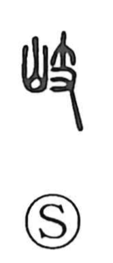

岐

Uncategorized
Kun: wakareru, wakaremichi | On: ki
diverge ・ branch off ・ forked road
Explanation
岐 is a phono-semantic character: the mountain element signals terrain, while 支 serves as the phonetic and also contributes meaning. 支 originally shows a hand holding a small branch, and by extension denotes things that divide or branch; the same idea appears in words like shishi (four limbs) and shi (wings), both referring to paired, branching members. Together they form 岐, the parting of a mountain path—hence “to branch off” and “a forked road,” as in kiro. Because such branching paths are found in elevated places, the sense extends to “a high place,” and figuratively to excellence in people, as in kishu, an outstanding person.